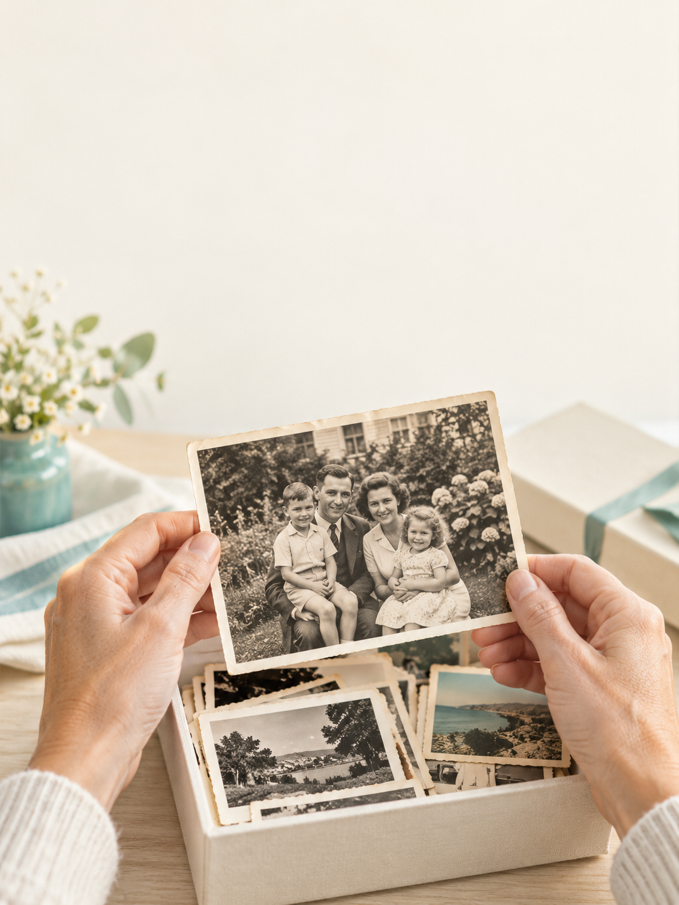
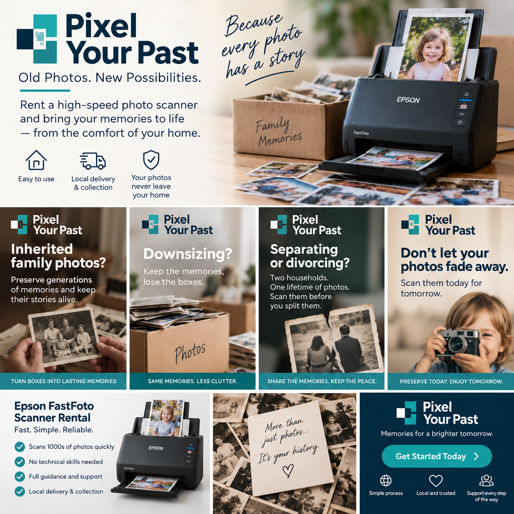
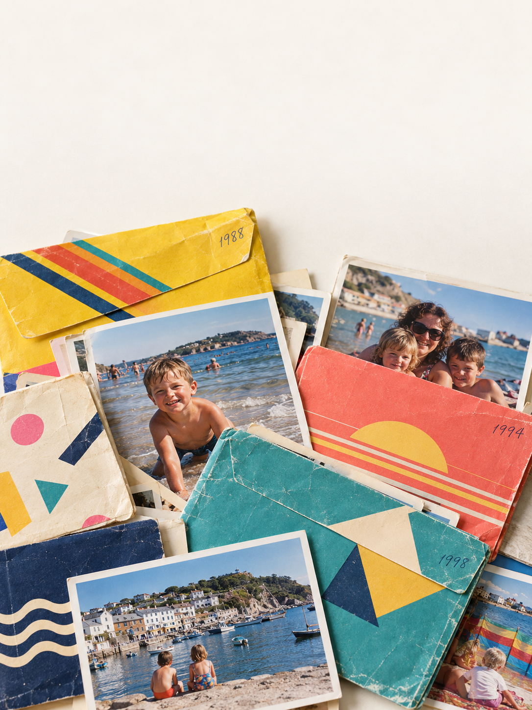
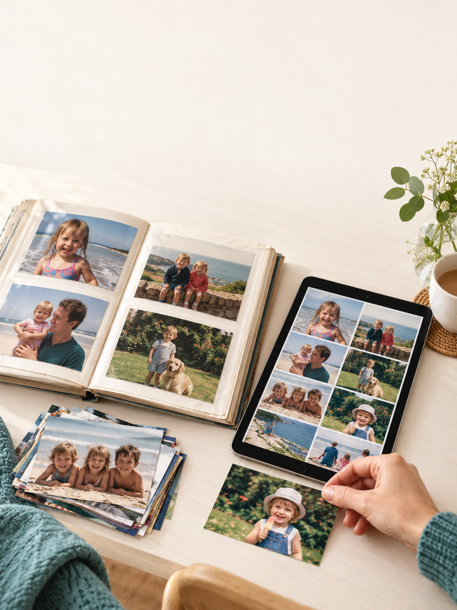

Pixel Your PastInherited
Turn boxes into lasting memories.Inherited
family photos?
Preserve generations of memories and keep their stories alive.
YOUR MEMORIES, BACK IN THE PICTURE
Bring your old photos to life with a high-speed photo scanner, rented to use in the comfort of your own home.

MORE THAN JUST PHOTOGRAPHS

Preserve generations of memories and keep their stories alive.

Keep the memories.
Lose the packets.
Two households.
One lifetime of photos.
Scan them before you split them.

Scan them today.
Share them tomorrow.
A LITTLE TIME. A LASTING DIFFERENCE.
No sending your precious photographs away. Just a scanner, your collection, and a little time to rediscover it all.
Pick a 4, 7, 14 or 30-day rental and choose delivery or local collection.
Scan at home, organise your digital photos and share the moments that matter.
Send it back or return it locally at the end of your rental. Your memories are yours to keep.
Choose your rental dates and add an available scanner to your basket.
LESS CLUTTER. MORE MEMORIES.
Their photos. Their stories.
Take a moment to read — hover to pause, or swipe on your phone.
OLD PHOTOS. NEW POSSIBILITIES.